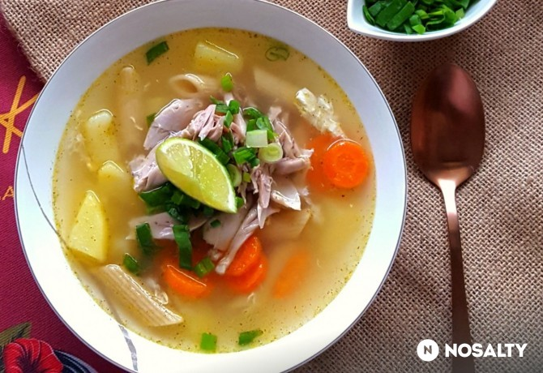
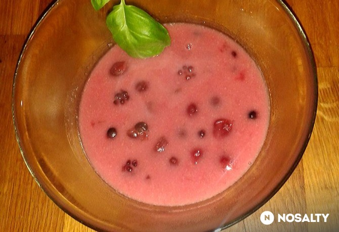
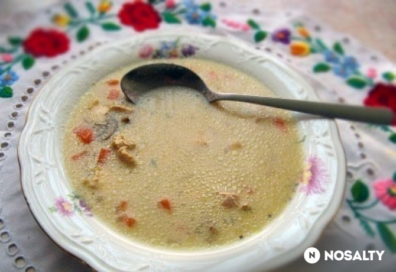
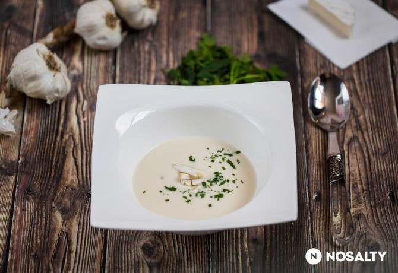
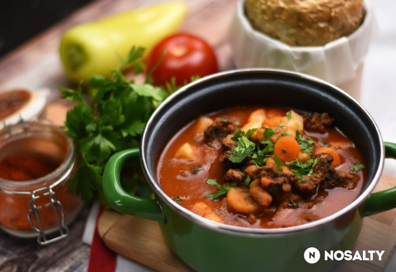

Leves receptek
A legjobb levesek egy helyen
Expressz Húsleves
megfázásra

Biztos Ti is ismeritek azt az érzést, amikor egy vírus ledönt a lábatokról, a torokfájástól beszélni sem tudtok, és semmi másra nem vágytok, mint egy forró házi húslevesre. Én ilyenkor szoktam megkérni a férjemet, hogy főzze meg a kedvenc, “gyógyító” húslevesemet, mert ez tényleg egy csodaszer, és ami még különösen jó benne, hogy nagyon hamar elkészül, nem kell órákig a fazék mellett állni. Bár tudom, hogy sokan az egész délelőtt gyöngyöző levesre szavaznak, higgyétek el, ez is legalább olyan finom, és a néhány extra hozzávaló mint a gyömbér, a lime és az újhagyma még tovább fokozza jótékony hatását.
Hozzávalók / 5 adag
- 1 db csirke
- 2 közepes db sárgarépa
- 2 közepes db burgonya
- 1 db tojás
- 4 cm gyömbér
- 80 g tészta (penne, cérnametélt, stb. ízlés szerint)
- 1 db leveskocka
- 1 lime-ból nyert limelé
- 1 közepes db újhagyma
- só ízlés szerint
- bors ízlés szerint
- oregánó ízlés szerint
- 2 l víz (kb.)
Elkészítés
- A tyúkot/csirkét 8 darabra vágjuk (alsó- és felsőcombok, szárnyak, csirkemell két részben). A csirkemellet félrerakhatjuk, de bele is főzhetjük a levesbe.
- Egy nagyobb lábosban vizet forralunk, sózzuk-borsozzuk, hozzáadjuk a tyúkhúsleveskockát és a két darabba vágott, meghámozott gyömbért. Beletesszük a csirkehúst, és lefedve kb. 30 percig főzzük.
- Közben a sárgarépát és a burgonyát meghámozzuk, a répát felkarikázzuk, a burgonyát kockákra vágjuk. A leveshez adjuk a zöldségeket, majd néhány perc elteltével a tésztát. Addig főzzük, amíg a tészta megpuhul.
- A tojást a lábos felett feltörjük, és folyamatos keverés mellett a levesbe csorgatjuk. Végül kevés szárított oregánóval ízesítjük a levest. Tálaláskor limelét facsarunk bele, és megszórjuk apróra vágott újhagymával. Egészségetekre!
Puddingos gyümölcsleves
az édes szájuaknak

A nagy gyerekkori kedvenc. A nyári nyaralások a nagyszülőknél, délben berohanás a játékból, és már ott volt az asztalon a kihűtött, gyönyörű színű, illatos gyümileves! Ezek jutnak mindig eszembe róla. Nagymamáim, ha igazán kedvünkre akartak tenni, biztos ezzel vártak bennünket, vagy csak egy szóra is, rögtön elkészítették. Sajnos Nagymamák már nincsenek, ezért saját magamnak kell a kedvemre tenni, így ha nagyon megkívánjuk, bizony neki kell állni. Ami azért meg kell mondjam, nem olyan nagy erőfeszítés...
Hozzávalók / 8 adag
- 350 g meggybefőtt
- 350 g őszibarack konzerv
- 350 g szilvabefőtt
- 1 közepes db alma
- 150 g erdei gyümölcs mix
- 1 kk fahéj
- 5 db szegfűszeg
- 4 evőkanál finomliszt
- 450 g tejföl
- 6 ek cukor
- 1 csipet só
- 2 l víz (szükség szerint)
Elkészítés
- A befőtteket, ha házi eltett, vagy nincs benne tartósítószer, levükkel együtt beleöntjük egy nagyobb fazékba, hozzáadjuk az erdei gyümölcsöket, és a meghámozott, kockákra vágott almát.
- Felöntjük vízzel, kb 5 l -re.
- Beletesszük a cukrot, ha nem használtuk a befőttek levét akkor több cukrot, sót, fahéjat, és szegfűszeget, és összeforraljuk.
- Ezalatt kikeverjük a lisztet a tejföllel csomómentesre.
- Ha felforrt a leves, kisebb adagokban felhigítjuk a tejfölös lisztet a lével jó folyósra, majd a forrásban lévő levesbe öntjük. Azonnal kevergetjük, és pár percet hagyjuk forrni.
- Megkóstoljuk, és ízlés szerint még édesíthetjük.
- Tálalás előtt hidegre hűtjük.
Legenyfogóleves
a kedvencek egyike

Kedvenc leveseim egyike. Sajnos ritkán készítem, mert családom nem minden tagja rajong a gombáért.
Hozzávalók / 8 adag
- 1 db csirkemell filé (kockára vágva)
- 1 kis fej vöröshagyma
- 20 dkg sárgarépa
- 20 dkg fehérrépa
- 20 dkg gomba (vagy szárított vargánya )
- babérlevél ízlés szerint
- bazsalikom ízlés szerint
- 1 teáskanál mustár (ízlés szerint)
- 2 dl tejföl
- 1 csapott ek finomliszt
- só ízlés szerint
- bors ízlés szerint
- 1 ek napraforgó olaj
Elkészítés
- A hagymát összevágjuk, majd olajon megpirítjuk.
- Hozzáadjuk a kockára vágott csirkemellet, fűszerezzük, majd rövid ideig pároljuk.
- Beletesszük a mustárt és a kockára vágott zöldségeket. Vízzel felengedjük, és készre főzzük.
- Tejfölös habarással sűrítjük a levest.
Sajtos fokhagymakrémleves
egy igazán krémes csoda

Azoknak akik valami különlegesre vágynak, akik szeretik a kihívásokat és egyáltalán nem félnek az újtól. Próbáld ki. Készítsd el. Mindenkit leveszel majd a lábáról.
Hozzávalók / 8 adag
- 2 fej fokhagyma (magyar)
- 2 evőkanál finomliszt
- 1 ek vaj (csapott)
- 1 ek olívaolaj
- 9 dl marha alaplé (lehet szárnyas is)
- 150 ml főzőtejszín
- 15 dkg sajt (reszelt)
- fehér bors ízlés szerint
- 1 csipet szerecsendió
- só ízlés szerint
Elkészítés
- A vajon és az olajon megfuttatjuk a feldarabolt fokhagymát.
- Meghintjük a liszttel, megkavarjuk, majd felöntjük a húslével. Fűszerezzük. 5 percig főzzük.
- Simává turmixoljuk. Visszatesszük a tűzre, hozzáadjuk a tejszínt, egyet forralunk rajta.
- Tálaláskor reszelt sajttal meghintjük.
- Kíváló camamberttel is,amit szeletelve tehetünk bele.
Babgulyás gazdagon
az igazi magyaros íz

Egy jó babgulyásra nem lehet nemet mondani, pláne ha a belerakott füstölt paprika ilyen csodálatos ízt és illatot kölcsönöz neki.
Hozzávalók / 8 adag
- 2 ek fűszerpaprikamag-olaj
- 1 nagy fej vöröshagyma
- 3 gerezd fokhagyma
- 2 ek füstölt pirospaprika
- 2 l víz (kb.)
- őrölt fűszerkömény ízlés szerint
- négyszínű bors ízlés szerint
- só ízlés szerint
- 3 db babérlevél
- 65 dkg marhalábszár
- 3 közepes db paradicsom
- 1 db paprika
- 1 db hegyes erős paprika
- 35 dkg fejtett bab
- 3 közepes db sárgarépa
- 1 közepes db fehérrépa
- 0.5 db zeller
- 1 közepes db karalábé
- 1 csokor petrezselyem
Elkészítés
- A felaprított hagymát a magolajon megdinszteljük. Ezután jöhet rá a füstölt fűszerpaprika és a fokhagyma. Felöntjük 1,5-2 dl vízzel, és a zsírjára pirítjuk.
- Amint elfőtt a víz, sózzuk-borsozzuk, megszórjuk köménnyel, és beledobunk egy pár babérlevelet. Hozzáadjuk a felkockázott marhahúst is, és fehéredésig pirítjuk.
- Jöhet bele a felkockázott paradicsom, paprika, erős paprika, valamint a bab. Felöntjük egy liter vízzel, majd lefedve 75 percet főzzük, közben időnként ellenőrizve, kell-e rá még víz.
- Amikor a bab már félpuha, jöhet a levesbe a répa, a zeller, a karalábé és a petrezselyem. Felöntjük annyi vízzel, amennyi ellepi, és további egy órát főzzük - közben szükség szerint hozzáönthetünk még egy kis vizet.
- A levest melegen, petrezselyemmel megszórva tálaljuk.